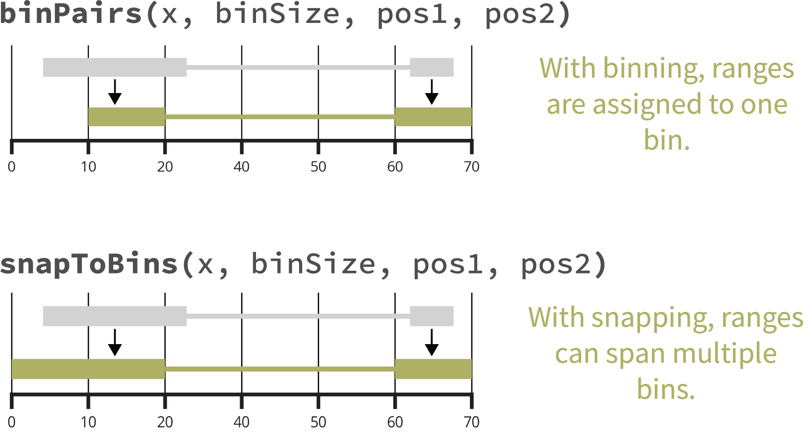

Why mariner?
Disruption or aberrant formation of chromatin interactions can result in developmental abnormalities and disease. Therefore, deriving biological insights from 3D chromatin structure experiments, such as Hi-C or Micro-C, is essential for understanding and correcting human disease.
mariner is an R/Bioconductor package for exploring 3D
chromatin structure data from Hi-C or Micro-C experiments. It enables
users to flexibly manipulate, extract, and aggregate chromatin
interaction data quickly and efficiently.
One ecosystemmariner extends
common Bioconductor classes, leveraging the thousands of existing tools
for analyzing and visualizing genomic data.
Modular designmariner's functions
can be combined and chained in various ways to produce custom
workflows.
Fast and efficientmariner
leverages HDF5 to store large results and uses block processing to
minimize hardware requirements.
Installation
This package can be installed through Bioconductor:
if (!require("BiocManager", quietly = TRUE))
install.packages("BiocManager")
BiocManager::install("mariner")Or the development version can be installed via GitHub:
if (!requireNamespace("remotes", quietly = TRUE))
install.packages("remotes")
remotes::install_github("EricSDavis/mariner")Key features
Manipulating Paired Ranges
mariner provides helpful functions for converting,
binning, and shifting paired genomic ranges.
Coercing to and accessing GInteractions
Pairwise interactions between genomic regions are represented in
Bioconductor with the GInteractions class from the
InteractionSet package. mariner provides
additional utilities for converting BEDPE-formatted data to
GInteractions as well as accessing relevant components of
these objects.
library(mariner)
library(marinerData)
## BEDPE-formatted file
bedpeFile <- marinerData::WT_5kbLoops.txt()
## Read BEDPE
bedpe <- read.table(bedpeFile, header = TRUE)
head(bedpe)## chromosome1 x1 x2 chromosome2 y1 y2 color
## 1 chr9 14460000 14465000 chr9 14765000 14770000 0,0,0
## 2 chr9 89565000 89570000 chr9 89810000 89815000 0,0,0
## 3 chr9 23725000 23730000 chr9 23785000 23790000 0,0,0
## 4 chr9 128165000 128170000 chr9 128670000 128675000 0,0,0
## 5 chr9 113100000 113105000 chr9 113380000 113385000 0,0,0
## 6 chr9 16570000 16575000 chr9 16865000 16870000 0,0,0
## APScoreAvg ProbabilityofEnrichment RegAPScoreAvg Avg_diffMaxNeihgboor_1
## 1 3.272132 0.9868535 2.233533 1.0059373
## 2 2.062756 0.9528638 1.326748 1.1275173
## 3 1.953737 0.9335626 1.408335 0.6212205
## 4 4.217386 0.9919898 2.144296 2.2130080
## 5 2.527488 0.9682012 1.470122 1.3876540
## 6 4.385120 0.9976317 2.230119 2.1201570
## Avg_diffMaxNeihgboor_2 avg std value
## 1 1.6455076 3.437883 0.5164226 4.332049
## 2 1.1394584 2.052792 0.5861371 3.055030
## 3 0.8722256 2.159580 0.3773057 2.711776
## 4 2.6013327 2.860420 1.0796510 4.827538
## 5 1.5604625 2.215215 0.6669347 3.448685
## 6 3.5826060 4.161625 1.0922525 6.046209
## Coerce to GInteractions
gi <- as_ginteractions(bedpe, keep.extra.columns = FALSE)
gi## GInteractions object with 12095 interactions and 0 metadata columns:
## seqnames1 ranges1 seqnames2 ranges2
## <Rle> <IRanges> <Rle> <IRanges>
## [1] chr9 14460000-14465000 --- chr9 14765000-14770000
## [2] chr9 89565000-89570000 --- chr9 89810000-89815000
## [3] chr9 23725000-23730000 --- chr9 23785000-23790000
## [4] chr9 128165000-128170000 --- chr9 128670000-128675000
## [5] chr9 113100000-113105000 --- chr9 113380000-113385000
## ... ... ... ... ... ...
## [12091] chr17 16900000-16905000 --- chr17 17095000-17100000
## [12092] chr17 7255000-7260000 --- chr17 7470000-7475000
## [12093] chr17 46880000-46885000 --- chr17 46955000-46960000
## [12094] chr17 17580000-17585000 --- chr17 17695000-17700000
## [12095] chr17 47645000-47650000 --- chr17 48075000-48080000
## -------
## regions: 20390 ranges and 0 metadata columns
## seqinfo: 23 sequences from an unspecified genome; no seqlengthsmariner extends InteractionSet’s accessors,
allowing users to extract each component of interactions as vectors.
seqnames1(gi) |> head()
start1(gi) |> head()
end1(gi) |> head()
seqnames2(gi) |> head()
start2(gi) |> head()
end2(gi) |> head()## [1] "chr9" "chr9" "chr9" "chr9" "chr9" "chr9"
## [1] 14460000 89565000 23725000 128165000 113100000 16570000
## [1] 14465000 89570000 23730000 128170000 113105000 16575000
## [1] "chr9" "chr9" "chr9" "chr9" "chr9" "chr9"
## [1] 14765000 89810000 23785000 128670000 113380000 16865000
## [1] 14770000 89815000 23790000 128675000 113385000 16870000Assigning paired ranges to bins
Chromatin interaction data is usually binned at specific resolutions.
mariner provides helpful functions for assigning
GInteractions objects to differently sized bins.
## Assign to 1Kb bins
binned <- assignToBins(x=gi, binSize = 1e3, pos1='center', pos2='center')
## Show that each anchor is 1Kb
library(InteractionSet)
width(binned) |> lapply(unique)## $first
## [1] 1001
##
## $second
## [1] 1001Note
GenomicRanges and GInteractions use ranges
that are 1-based while .hic are 0-based. For correct
downstream processing with .hic files, these functions put
ranges into 0-based bins. This is why the width function
returns binSize + 1.
This function also allows each pair, or anchor, to be binned
separately and from different reference points (e.g. pos1
and pos2).
## Assign anchor1 to 1Kb bins and anchor2 to 25Kb bins
binned <- assignToBins(x=gi, binSize=c(1e3, 25e3), pos1="start", pos2="center")
## Show that the first anchor is 1Kb and
## second anchor is 25Kb
width(binned) |> lapply(unique)## $first
## [1] 1001
##
## $second
## [1] 25001While assignToBins() assigns each pair of ranges to a
single bin, the snapToBins() function assigns the starts
and ends of the ranges to their nearest bin. This allows each anchor to
span multiple bins.
## Create an example GInteractions object
gi <- GInteractions(
anchor1 = c(
GRanges("chr1:1-15"),
GRanges("chr1:1-11")
),
anchor2 = c(
GRanges("chr1:25-31"),
GRanges("chr1:19-31")
)
)
## Original interactions
gi
## Snap to bins with different binSizes
snapToBins(x=gi, binSize=5)
snapToBins(x=gi, binSize=10)## GInteractions object with 2 interactions and 0 metadata columns:
## seqnames1 ranges1 seqnames2 ranges2
## <Rle> <IRanges> <Rle> <IRanges>
## [1] chr1 1-15 --- chr1 25-31
## [2] chr1 1-11 --- chr1 19-31
## -------
## regions: 4 ranges and 0 metadata columns
## seqinfo: 1 sequence from an unspecified genome; no seqlengths
## GInteractions object with 2 interactions and 0 metadata columns:
## seqnames1 ranges1 seqnames2 ranges2
## <Rle> <IRanges> <Rle> <IRanges>
## [1] chr1 0-15 --- chr1 25-30
## [2] chr1 0-10 --- chr1 20-30
## -------
## regions: 4 ranges and 0 metadata columns
## seqinfo: 1 sequence from an unspecified genome; no seqlengths
## GInteractions object with 2 interactions and 0 metadata columns:
## seqnames1 ranges1 seqnames2 ranges2
## <Rle> <IRanges> <Rle> <IRanges>
## [1] chr1 0-20 --- chr1 20-30
## [2] chr1 0-10 --- chr1 20-30
## -------
## regions: 3 ranges and 0 metadata columns
## seqinfo: 1 sequence from an unspecified genome; no seqlengthsThe following figure summarizes the differences between binning and snapping.

Clustering & Merging Interactions
Group nearby interactions and select one as representative.
When combining BEDPE files, it is often important to recognize and
reduce duplicate or near duplicate interactions.
mergePairs() allows users to cluster interactions within a
specified genomic radius and select a representative interaction for the
group.
This is particularly helpful in analysis of chromatin loop where
multiple Hi-C replicates often identify the same loop but assign it to a
different (but often neighboring) pixel. To avoid redundancy,
mergePairs() identifies and merges these into a unified
non-redundant loop set.
Here, two example BEDPE files are imported as a list of
GInteractions objects.
library(mariner)
library(marinerData)
## BEDPE-formatted files
bedpeFiles <- c(
marinerData::FS_5kbLoops.txt(),
marinerData::WT_5kbLoops.txt()
)
names(bedpeFiles) <- c("FS", "WT")
## Read as list of GInteractions
giList <-
lapply(bedpeFiles, read.table, header=TRUE) |>
lapply(as_ginteractions)
lapply(giList, summary)## $FS
## [1] "GInteractions object of length 8566 with 9 metadata columns"
##
## $WT
## [1] "GInteractions object of length 12095 with 9 metadata columns"Then cluster and merge with mergePairs().
mgi <- mergePairs(
x=giList,
radius=10e3
)
mgi## MergedGInteractions object with 16716 interactions and 0 metadata columns:
## seqnames1 ranges1 seqnames2 ranges2
## <Rle> <IRanges> <Rle> <IRanges>
## [1] chr9 118645000-118650000 --- chr9 119330000-119335000
## [2] chr9 15280000-15285000 --- chr9 15405000-15410000
## [3] chr9 110180000-110185000 --- chr9 111520000-111525000
## [4] chr9 80375000-80380000 --- chr9 80650000-80655000
## [5] chr9 108380000-108385000 --- chr9 108475000-108480000
## ... ... ... ... ... ...
## [16712] chr17 71422500-71427500 --- chr17 72170000-72175000
## [16713] chr17 28450000-28455000 --- chr17 28657500-28662500
## [16714] chr17 65375000-65380000 --- chr17 65685000-65690000
## [16715] chr17 77712500-77717500 --- chr17 77965000-77970000
## [16716] chr17 46880000-46885000 --- chr17 46955000-46960000
## -------
## regions: 28189 ranges and 0 metadata columns
## seqinfo: 23 sequences from an unspecified genome; no seqlengthsNote
The metadata is missing from these interactions. Since no
column was provided, each interaction may be an average of
one or more interaction. The user can decide how metadata from each
cluster should be aggregated with aggMetadata().
The resulting object is MergedGInteractions class, where
each of these interactions is a representative cluster of one or more
interactions. This class behaves like GInteractions but
contains additional information about the clustered interactions.
To view the clusters of specific interactions, use the
clusters() accessor.
mgi[12772]
clusters(mgi[12772])## MergedGInteractions object with 1 interaction and 0 metadata columns:
## seqnames1 ranges1 seqnames2 ranges2
## <Rle> <IRanges> <Rle> <IRanges>
## [1] chr9 90302500-90307500 --- chr9 90430000-90435000
## -------
## regions: 28189 ranges and 0 metadata columns
## seqinfo: 23 sequences from an unspecified genome; no seqlengths
## [[1]]
## seqnames1 start1 end1 width1 strand1 seqnames2 start2 end2
## <fctr> <int> <int> <int> <fctr> <fctr> <int> <int>
## 1: chr9 90300000 90305000 5001 * chr9 90430000 90435000
## 2: chr9 90305000 90310000 5001 * chr9 90430000 90435000
## width2 strand2 color APScoreAvg ProbabilityofEnrichment RegAPScoreAvg
## <int> <fctr> <char> <num> <num> <num>
## 1: 5001 * 0,0,0 2.543816 0.9444922 1.887968
## 2: 5001 * 0,0,0 2.718088 0.9531689 1.922928
## Avg_diffMaxNeihgboor_1 Avg_diffMaxNeihgboor_2 avg std value
## <num> <num> <num> <num> <num>
## 1: 0.7340446 0.7978164 2.239048 0.4049837 2.891532
## 2: 0.7962394 1.0013034 2.353757 0.5259836 3.061525
## src
## <char>
## 1: FS
## 2: WTWhen no column argument is provided the most frequently
occurring interaction is selected. In the pair above, the mean position
of both anchors is returned since neither is more frequent.
Alternatively, users can specify the column argument to
use a custom metric for selecting a representative interaction.
mgi <- mergePairs(
x=giList,
radius=10e3,
column="APScoreAvg",
selectMax=TRUE
)
mgi## MergedGInteractions object with 16716 interactions and 9 metadata columns:
## seqnames1 ranges1 seqnames2 ranges2 |
## <Rle> <IRanges> <Rle> <IRanges> |
## [1] chr9 118645000-118650000 --- chr9 119330000-119335000 |
## [2] chr9 15280000-15285000 --- chr9 15405000-15410000 |
## [3] chr9 110180000-110185000 --- chr9 111520000-111525000 |
## [4] chr9 80375000-80380000 --- chr9 80650000-80655000 |
## [5] chr9 108380000-108385000 --- chr9 108475000-108480000 |
## ... ... ... ... ... ... .
## [16712] chr17 71425000-71430000 --- chr17 72170000-72175000 |
## [16713] chr17 28450000-28455000 --- chr17 28660000-28665000 |
## [16714] chr17 65375000-65380000 --- chr17 65685000-65690000 |
## [16715] chr17 77710000-77715000 --- chr17 77965000-77970000 |
## [16716] chr17 46880000-46885000 --- chr17 46955000-46960000 |
## color APScoreAvg ProbabilityofEnrichment RegAPScoreAvg
## <character> <numeric> <numeric> <numeric>
## [1] 0,0,0 2.61103 0.986044 1.41438
## [2] 0,0,0 2.45301 0.982802 1.54370
## [3] 0,0,0 3.40635 0.996545 1.80221
## [4] 0,0,0 2.09352 0.946897 1.40194
## [5] 0,0,0 2.14182 0.936547 1.41005
## ... ... ... ... ...
## [16712] 0,0,0 4.05887 0.997252 2.12187
## [16713] 0,0,0 4.47565 0.995379 2.49118
## [16714] 0,0,0 3.91395 0.996974 2.83091
## [16715] 0,0,0 3.39028 0.979869 2.42961
## [16716] 0,0,0 3.89043 0.982768 2.73390
## Avg_diffMaxNeihgboor_1 Avg_diffMaxNeihgboor_2 avg std
## <numeric> <numeric> <numeric> <numeric>
## [1] 1.875585 2.12164 2.60512 0.794220
## [2] 1.491568 1.60777 2.73756 0.856876
## [3] 3.768934 3.89112 4.49898 1.492786
## [4] 0.818514 1.10611 2.20826 0.589976
## [5] 0.907892 1.01824 1.95072 0.543293
## ... ... ... ... ...
## [16712] 2.484298 3.15533 3.68911 1.144096
## [16713] 2.181075 2.63508 3.43889 0.827104
## [16714] 1.091847 1.96232 4.83071 0.753955
## [16715] 1.139229 1.15973 2.89326 0.589743
## [16716] 0.906871 1.43305 3.25531 0.368257
## value
## <numeric>
## [1] 4.27231
## [2] 4.06339
## [3] 7.84915
## [4] 2.93583
## [5] 2.75773
## ... ...
## [16712] 5.89737
## [16713] 5.37762
## [16714] 5.80124
## [16715] 3.90591
## [16716] 4.06142
## -------
## regions: 27152 ranges and 0 metadata columns
## seqinfo: 23 sequences from an unspecified genome; no seqlengthsThe interaction with the higher value (selectMax=TRUE)
for “APScoreAvg” has been selected.
mgi[12772]
clusters(mgi[12772])## MergedGInteractions object with 1 interaction and 9 metadata columns:
## seqnames1 ranges1 seqnames2 ranges2 | color
## <Rle> <IRanges> <Rle> <IRanges> | <character>
## [1] chr9 90305000-90310000 --- chr9 90430000-90435000 | 0,0,0
## APScoreAvg ProbabilityofEnrichment RegAPScoreAvg Avg_diffMaxNeihgboor_1
## <numeric> <numeric> <numeric> <numeric>
## [1] 2.71809 0.953169 1.92293 0.796239
## Avg_diffMaxNeihgboor_2 avg std value
## <numeric> <numeric> <numeric> <numeric>
## [1] 1.0013 2.35376 0.525984 3.06153
## -------
## regions: 27152 ranges and 0 metadata columns
## seqinfo: 23 sequences from an unspecified genome; no seqlengths
## [[1]]
## seqnames1 start1 end1 width1 strand1 seqnames2 start2 end2
## <fctr> <int> <int> <int> <fctr> <fctr> <int> <int>
## 1: chr9 90300000 90305000 5001 * chr9 90430000 90435000
## 2: chr9 90305000 90310000 5001 * chr9 90430000 90435000
## width2 strand2 color APScoreAvg ProbabilityofEnrichment RegAPScoreAvg
## <int> <fctr> <char> <num> <num> <num>
## 1: 5001 * 0,0,0 2.543816 0.9444922 1.887968
## 2: 5001 * 0,0,0 2.718088 0.9531689 1.922928
## Avg_diffMaxNeihgboor_1 Avg_diffMaxNeihgboor_2 avg std value
## <num> <num> <num> <num> <num>
## 1: 0.7340446 0.7978164 2.239048 0.4049837 2.891532
## 2: 0.7962394 1.0013034 2.353757 0.5259836 3.061525
## src
## <char>
## 1: FS
## 2: WTThe sets() accessor allows users to find which
interactions are shared or exclusive between sets of interactions in the
giList.
## List the input sources
sources(mgi)## [1] "FS" "WT"## $FS
## [1] "MergedGInteractions object of length 4621 with 9 metadata columns"
##
## $WT
## [1] "MergedGInteractions object of length 8150 with 9 metadata columns"
##
## $FS_WT
## [1] "MergedGInteractions object of length 3945 with 9 metadata columns"## MergedGInteractions object with 3945 interactions and 9 metadata columns:
## seqnames1 ranges1 seqnames2 ranges2 |
## <Rle> <IRanges> <Rle> <IRanges> |
## [1] chr9 90305000-90310000 --- chr9 90430000-90435000 |
## [2] chr9 17810000-17815000 --- chr9 18210000-18215000 |
## [3] chr9 14615000-14620000 --- chr9 14765000-14770000 |
## [4] chr9 123640000-123645000 --- chr9 123690000-123695000 |
## [5] chr9 116350000-116355000 --- chr9 116415000-116420000 |
## ... ... ... ... ... ... .
## [3941] chr17 71425000-71430000 --- chr17 72170000-72175000 |
## [3942] chr17 28450000-28455000 --- chr17 28660000-28665000 |
## [3943] chr17 65375000-65380000 --- chr17 65685000-65690000 |
## [3944] chr17 77710000-77715000 --- chr17 77965000-77970000 |
## [3945] chr17 46880000-46885000 --- chr17 46955000-46960000 |
## color APScoreAvg ProbabilityofEnrichment RegAPScoreAvg
## <character> <numeric> <numeric> <numeric>
## [1] 0,0,0 2.71809 0.953169 1.92293
## [2] 0,0,0 6.67809 0.999825 3.09492
## [3] 0,0,0 4.03621 0.990983 1.88137
## [4] 0,0,0 1.80119 0.915252 1.30425
## [5] 0,0,0 3.98045 0.993344 2.34677
## ... ... ... ... ...
## [3941] 0,0,0 4.05887 0.997252 2.12187
## [3942] 0,0,0 4.47565 0.995379 2.49118
## [3943] 0,0,0 3.91395 0.996974 2.83091
## [3944] 0,0,0 3.39028 0.979869 2.42961
## [3945] 0,0,0 3.89043 0.982768 2.73390
## Avg_diffMaxNeihgboor_1 Avg_diffMaxNeihgboor_2 avg std
## <numeric> <numeric> <numeric> <numeric>
## [1] 0.796239 1.001303 2.35376 0.525984
## [2] 4.171168 5.166137 4.94208 1.538564
## [3] 1.987963 2.934255 2.94201 0.802044
## [4] 0.674690 0.726729 1.86861 0.317171
## [5] 1.527367 2.450921 3.65504 0.677612
## ... ... ... ... ...
## [3941] 2.484298 3.15533 3.68911 1.144096
## [3942] 2.181075 2.63508 3.43889 0.827104
## [3943] 1.091847 1.96232 4.83071 0.753955
## [3944] 1.139229 1.15973 2.89326 0.589743
## [3945] 0.906871 1.43305 3.25531 0.368257
## value
## <numeric>
## [1] 3.06153
## [2] 8.64979
## [3] 4.70909
## [4] 2.46833
## [5] 5.01270
## ... ...
## [3941] 5.89737
## [3942] 5.37762
## [3943] 5.80124
## [3944] 3.90591
## [3945] 4.06142
## -------
## regions: 27152 ranges and 0 metadata columns
## seqinfo: 23 sequences from an unspecified genome; no seqlengthsThis is particularly useful for identifying de novo, shared
or transient interactions. For more information see
?sets().
Extracting & Aggregating Interactions
Pull Hi-C pixels or matrices, then aggregate by files or interactions.
mariner provides two functions for extracting contacts
from .hic files, pullHicPixels() and
pullHicMatrices(), which use the binSize
argument to determine how the data should be returned. In short,
pullHicPixels() returns a matrix of contact frequency for
each interaction and .hic file, while
pullHicMatrices() returns an array of contact matrices. The
following sections describe when and how to use each of these
functions.
Pulling pixels
Pixels are defined as paired-ranges with widths equal to their
binSize. When all interactions are pixels,
pullHicPixels() returns an InteractionMatrix
object containing a matrix of contact frequency for each interaction
(row) and .hic file (column).
As described in previous sections, BEDPE files containing the locations of chromatin loops can be read in and merged.
library(mariner)
library(marinerData)
## BEDPE-formatted files
bedpeFiles <- c(
marinerData::FS_5kbLoops.txt(),
marinerData::WT_5kbLoops.txt()
)
names(bedpeFiles) <- c("FS", "WT")
## Read as list of GInteractions
giList <-
lapply(bedpeFiles, read.table, header=TRUE) |>
lapply(as_ginteractions)
## Merge
mgi <- mergePairs(x=giList, radius=10e3, column="APScoreAvg")
summary(mgi)## [1] "MergedGInteractions object of length 16716 with 9 metadata columns"The marinerData ExperimentHub package
includes some small .hic files that can be downloaded for
testing.
library(marinerData)
hicFiles <- c(
LEUK_HEK_PJA27_inter_30.hic(),
LEUK_HEK_PJA30_inter_30.hic()
)
names(hicFiles) <- c("FS", "WT")
hicFiles## FS
## "/home/runner/.cache/R/ExperimentHub/1c6a2e2a0cb1_8147"
## WT
## "/home/runner/.cache/R/ExperimentHub/1c6a6d746570_8148"The strawr package includes functions for visualizing
the available chromosomes, resolutions (binSizes), and
normalizations in the .hic files.
## $FS
## [1] "NONE" "KR" "VC" "VC_SQRT"
##
## $WT
## [1] "NONE" "KR" "VC" "VC_SQRT"
## Resolutions
lapply(hicFiles, readHicBpResolutions)## $FS
## [1] 2500000 1000000 500000 250000 100000 50000 25000 10000 5000
##
## $WT
## [1] 2500000 1000000 500000 250000 100000 50000 25000 10000 5000## $FS
## index name length
## 1 1 1 248956422
## 2 12 10 133797422
## 3 174 10_GL383545V1_ALT 179254
## 4 79 10_GL383546V1_ALT 309802
## 5 168 10_KI270824V1_ALT 181496
## 6 150 10_KI270825V1_ALT 188315
##
## $WT
## index name length
## 1 1 1 248956422
## 2 12 10 133797422
## 3 174 10_GL383545V1_ALT 179254
## 4 79 10_GL383546V1_ALT 309802
## 5 168 10_KI270824V1_ALT 181496
## 6 150 10_KI270825V1_ALT 188315Since the chromosomes in the .hic files have been
processed without the “chr” prefix, it is important to change the
seqLevelsStyle of the interactions to match.
GenomeInfoDb::seqlevelsStyle(mgi) <- 'ENSEMBL'These interactions can then be binned to the desired resolution with
the assignToBins() function.
## Assign interactions to 100Kb bins
binned <- assignToBins(x=mgi, binSize=100e3)Contact frequency can then be extracted with
pullHicPixels(). Here only the first 1000 pixels are pulled
for demonstration purposes.
imat <- pullHicPixels(
x=binned[1:1000],
files=hicFiles,
binSize=100e3
)
imat## class: InteractionMatrix
## dim: count matrix with 1000 interactions and 2 file(s)
## metadata(3): binSize norm matrix
## assays(1): counts
## rownames: NULL
## rowData names(9): color APScoreAvg ... std value
## colnames(2): FS WT
## colData names(2): files fileNames
## type: MergedGInteractions
## regions: 13923Note
There are many parameters in the pullHicPixels()
function. Users can change the normalization, the type of matrix pulled
(e.g. “observed” vs “expected”), and where/how the on-disk data is
stored. Users can also decrease the amount of data read into memory by
decreasing the blockSize. For more information see
?pullHicPixels() or ?pullHicMatrices().
The count matrix can be extracted from the
InteractionMatrix class with the counts()
function.
counts(imat)## <1000 x 2> DelayedMatrix object of type "double":
## FS WT
## [1,] 4 1
## [2,] 8 5
## [3,] 3 2
## [4,] 3 3
## [5,] 14 8
## ... . .
## [996,] 6 10
## [997,] 5 4
## [998,] 0 0
## [999,] 11 5
## [1000,] 0 0Note
The InteractionMatrix class extends
InteractionSet and SummarizedExperiment
classes. See the documentation for these classes for instructions on how
to extract different parts of the InteractionMatrix
object.
Pulling submatrices
When the widths of paired-ranges are greater than the
binSize, pullHicMatrices() returns an
InteractionArray object containing an array of contact
matrices for each interaction and .hic file.
Using the example above, reducing the binSize to 25Kb
when the data is binned at 100Kb results in 4x4 count matrices for each
interaction instead of a single value.
iarr <- pullHicMatrices(
x=binned[1:1000],
file=hicFiles,
binSize = 25e3
)
iarr## class: InteractionArray
## dim: 1000 interaction(s), 2 file(s), 4x4 count matrix(es)
## metadata(3): binSize norm matrix
## assays(3): counts rownames colnames
## rownames: NULL
## rowData names(9): color APScoreAvg ... std value
## colnames(2): FS WT
## colData names(2): files fileNames
## type: MergedGInteractions
## regions: 13923This results in an InteractionArray with 1000
interactions, each with 4x4 count matrices across 2 .hic
files. These data can be accessed with the same counts()
accessor.
counts(iarr)## <4 x 4 x 1000 x 2> DelayedArray object of type "double":
## ,,1,FS
## [,1] [,2] [,3] [,4]
## [1,] 0 0 0 0
## [2,] 0 0 0 1
## [3,] 0 1 0 1
## [4,] 0 1 0 0
##
## ...
##
## ,,1000,WT
## [,1] [,2] [,3] [,4]
## [1,] 0 0 0 0
## [2,] 0 0 0 0
## [3,] 0 0 0 0
## [4,] 0 0 0 0The start bins for each interaction can be shown by setting
showDimnames=TRUE.
counts(iarr, showDimnames=TRUE)## <4 x 4 x 1000 x 2> DelayedArray object of type "double":
## ,,1,FS
## 119300000 119325000 119350000 119375000
## 118600000 0 0 0 0
## 118625000 0 0 0 1
## 118650000 0 1 0 1
## 118675000 0 1 0 0
##
## ...
##
## ,,1000,WT
## 108700000 108725000 108750000 108775000
## 107900000 0 0 0 0
## 107925000 0 0 0 0
## 107950000 0 0 0 0
## 107975000 0 0 0 0Note
These functions utilize the DelayedArray and
HDF5Array framework to efficiently store extracted data
on-disk, freeing up RAM, and allowing users to work with large contact
data seamlessly.
The pixelsToMatrices() function helps prepare regions
surrounding a central pixel. For example, the code below shows how to
pull 3x3 matrices surrounding a 100Kb pixel.
## Define region with 1-pixel buffer
regions <- pixelsToMatrices(x=binned[1:1000], buffer=1)
## Pull 3x3 matrices from 1000 interactions and 2 hic files
iarr <- pullHicMatrices(
x=regions,
files=hicFiles,
binSize=100e3
)
## See count matrices
counts(iarr)## <3 x 3 x 1000 x 2> DelayedArray object of type "double":
## ,,1,FS
## [,1] [,2] [,3]
## [1,] 1 3 2
## [2,] 1 4 4
## [3,] 3 0 4
##
## ,,2,FS
## [,1] [,2] [,3]
## [1,] 3 4 3
## [2,] 11 8 2
## [3,] 40 8 5
##
## ,,3,FS
## [,1] [,2] [,3]
## [1,] 0 1 1
## [2,] 1 3 0
## [3,] 2 2 2
##
## ...
##
## ,,998,WT
## [,1] [,2] [,3]
## [1,] 0 1 1
## [2,] 0 0 0
## [3,] 2 1 2
##
## ,,999,WT
## [,1] [,2] [,3]
## [1,] 8 3 2
## [2,] 13 5 2
## [3,] 42 10 5
##
## ,,1000,WT
## [,1] [,2] [,3]
## [1,] 3 0 0
## [2,] 0 0 0
## [3,] 0 1 2This also works on rectangular selections.
## Bin at two different resolutions
binned <- assignToBins(x=mgi, binSize=c(100e3, 250e3))
## Pull 10x25 matrices from 1000 interactions and 2 hic files
iarr2 <- pullHicMatrices(
x=binned[1:1000],
files=hicFiles,
binSize=10e3
)
## See count matrices
counts(iarr2)## <10 x 25 x 1000 x 2> DelayedArray object of type "double":
## ,,1,FS
## [,1] [,2] [,3] ... [,24] [,25]
## [1,] 0 0 0 . 0 0
## [2,] 0 0 0 . 0 0
## ... . . . . . .
## [9,] 0 0 0 . 0 0
## [10,] 0 0 0 . 0 0
##
## ...
##
## ,,1000,WT
## [,1] [,2] [,3] ... [,24] [,25]
## [1,] 0 0 0 . 0 0
## [2,] 0 0 0 . 0 0
## ... . . . . . .
## [9,] 0 0 0 . 0 0
## [10,] 0 0 0 . 0 0Aggregating count matrices
The aggHicMatrices() function allows flexible
aggregation of InteractionArray objects by interactions,
Hi-C files, or both (default). The FUN argument controls
how these contacts should be aggregated (the default is
sum).
## One matrix per interaction
aggHicMatrices(x=iarr, by="interactions")## / Reading and realizing block 1/5 ... OK
## \ Processing it ... OK
## / Reading and realizing block 2/5 ... OK
## \ Processing it ... OK
## / Reading and realizing block 3/5 ... OK
## \ Processing it ... OK
## / Reading and realizing block 4/5 ... OK
## \ Processing it ... OK
## / Reading and realizing block 5/5 ... OK
## \ Processing it ... OK## <3 x 3 x 1000> DelayedArray object of type "double":
## ,,1
## [,1] [,2] [,3]
## [1,] 1 4 2
## [2,] 4 5 7
## [3,] 4 3 6
##
## ,,2
## [,1] [,2] [,3]
## [1,] 7 5 7
## [2,] 15 13 3
## [3,] 63 19 9
##
## ,,3
## [,1] [,2] [,3]
## [1,] 1 1 2
## [2,] 4 5 2
## [3,] 3 6 2
##
## ...
##
## ,,998
## [,1] [,2] [,3]
## [1,] 0 1 2
## [2,] 1 0 0
## [3,] 5 2 3
##
## ,,999
## [,1] [,2] [,3]
## [1,] 18 8 7
## [2,] 29 16 5
## [3,] 97 31 9
##
## ,,1000
## [,1] [,2] [,3]
## [1,] 4 1 2
## [2,] 1 0 1
## [3,] 3 2 2
## One matrix per file
aggHicMatrices(x=iarr, by="files")## <3 x 3 x 2> DelayedArray object of type "double":
## ,,FS
## [,1] [,2] [,3]
## [1,] 6803 3789 2709
## [2,] 11212 6874 3776
## [3,] 13871 11029 6562
##
## ,,WT
## [,1] [,2] [,3]
## [1,] 5645 3180 2240
## [2,] 8964 5678 2996
## [3,] 11282 9085 5614
## One matrix total
aggHicMatrices(x=iarr)## <3 x 3> DelayedMatrix object of type "double":
## [,1] [,2] [,3]
## [1,] 12448 6969 4949
## [2,] 20176 12552 6772
## [3,] 25153 20114 12176Note
The aggHicMatrices() function uses block processing to
operate on the DelayedArray count matrices. The
nBlocks argument controls how many blocks the data should
be split into for processing. This can be conducted in parallel by
setting BPPARAM. See ?aggHicMatrices() for
more information.
Visualizing aggregated matrices
mariner provides the plotMatrix() function
for visualizing the aggregated .hic matrices, such as in an
aggregate peak analysis.
mat <- aggHicMatrices(x=iarr)
plotMatrix(data=mat)## MatrixPlot[MatrixPlot1]This function is compatible with plotgardener, an
R/Bioconductor genomic visualization package. plotgardener
gives precise control over the size and placement of plots on a page,
making it suitable for complex, publication-ready figure building. For
more information about plotgardener visit https://phanstiellab.github.io/plotgardener/.
Calculating Loop Enrichment
Determine loop enrichment to local background with selection functions to flexibility select foreground and background.
The calcLoopEnrichment() function combines many of the
steps described in the previous sections into a single function that
pulls Hi-C pixels and calculates the enrichment of a selected
foreground compared to a selected background.
mariner provides several different selection functions
for easily and flexibly selecting different parts of a matrix. The code
below shows a few examples of how these functions can be used and
combined to select virtually any part of a square matrix.
## Define the buffer
buffer <- 3
## Select center pixel
selectCenterPixel(mhDist=0, buffer=buffer)## '0' = selected; '-' = unselected
##
## - - - - - - -
## - - - - - - -
## - - - - - - -
## - - - 0 - - -
## - - - - - - -
## - - - - - - -
## - - - - - - -
## With a radial distance
selectCenterPixel(mhDist=0:1, buffer=buffer)## '0' = selected; '-' = unselected
##
## - - - - - - -
## - - - - - - -
## - - - 0 - - -
## - - 0 0 0 - -
## - - - 0 - - -
## - - - - - - -
## - - - - - - -
## Select all corners
selectCorners(n=2, buffer=buffer)## '0' = selected; '-' = unselected
##
## 0 0 - - - 0 0
## 0 0 - - - 0 0
## - - - - - - -
## - - - - - - -
## - - - - - - -
## 0 0 - - - 0 0
## 0 0 - - - 0 0
## Combine functions
selectTopLeft(n=2, buffer=buffer) +
selectBottomRight(n=2, buffer=buffer)## '0' = selected; '-' = unselected
##
## 0 0 - - - - -
## 0 0 - - - - -
## - - - - - - -
## - - - - - - -
## - - - - - - -
## - - - - - 0 0
## - - - - - 0 0These selection functions can be passed into
calcLoopEnrichment() along with a
GInteractions object defining the loop pixels to calculate
enrichment for each .hic file.
library(mariner)
library(marinerData)
## Define hicFiles
hicFiles <- c(
LEUK_HEK_PJA27_inter_30.hic(),
LEUK_HEK_PJA30_inter_30.hic()
) |> setNames(c("FS", "WT"))
## Read in loops
loops <-
WT_5kbLoops.txt() |>
setNames("WT") |>
read.table(header=TRUE, nrows=1000) |>
as_ginteractions() |>
assignToBins(binSize=100e3) |>
GenomeInfoDb::`seqlevelsStyle<-`('ENSEMBL')
## Define foreground & background
buffer <- 10
fg <- selectCenterPixel(mhDist=0:1, buffer=buffer)
bg <- selectTopLeft(n=2, buffer=buffer) +
selectBottomRight(n=2, buffer=buffer)
## Calculate loop enrichment
enrich <- calcLoopEnrichment(
x=loops,
files=hicFiles,
fg=fg,
bg=bg
)
enrich## <1000 x 2> DelayedMatrix object of type "double":
## FS WT
## [1,] 1.1111111 1.2500000
## [2,] 0.6250000 1.1666667
## [3,] 0.9090909 1.5294118
## [4,] 0.8888889 0.6666667
## [5,] 0.6363636 0.9333333
## ... . .
## [996,] 0.8372093 0.5714286
## [997,] 0.9795918 1.1034483
## [998,] 1.3333333 1.2000000
## [999,] 1.6000000 0.6666667
## [1000,] 1.5000000 1.0000000This results in a DelayedMatrix with rows for each
interaction and columns corresponding to each .hic
file.
Session Info
## R version 4.5.1 Patched (2025-07-30 r88506)
## Platform: x86_64-pc-linux-gnu
## Running under: Ubuntu 24.04.2 LTS
##
## Matrix products: default
## BLAS: /usr/lib/x86_64-linux-gnu/openblas-pthread/libblas.so.3
## LAPACK: /usr/lib/x86_64-linux-gnu/openblas-pthread/libopenblasp-r0.3.26.so; LAPACK version 3.12.0
##
## locale:
## [1] LC_CTYPE=C.UTF-8 LC_NUMERIC=C LC_TIME=C.UTF-8
## [4] LC_COLLATE=C.UTF-8 LC_MONETARY=C.UTF-8 LC_MESSAGES=C.UTF-8
## [7] LC_PAPER=C.UTF-8 LC_NAME=C LC_ADDRESS=C
## [10] LC_TELEPHONE=C LC_MEASUREMENT=C.UTF-8 LC_IDENTIFICATION=C
##
## time zone: UTC
## tzcode source: system (glibc)
##
## attached base packages:
## [1] stats4 stats graphics grDevices utils datasets methods
## [8] base
##
## other attached packages:
## [1] strawr_0.0.92 InteractionSet_1.36.1
## [3] SummarizedExperiment_1.38.1 Biobase_2.68.0
## [5] MatrixGenerics_1.20.0 matrixStats_1.5.0
## [7] GenomicRanges_1.60.0 GenomeInfoDb_1.44.1
## [9] IRanges_2.42.0 S4Vectors_0.46.0
## [11] BiocGenerics_0.54.0 generics_0.1.4
## [13] marinerData_1.8.0 mariner_1.9.1
##
## loaded via a namespace (and not attached):
## [1] DBI_1.2.3 bitops_1.0-9 rlang_1.1.6
## [4] magrittr_2.0.3 compiler_4.5.1 RSQLite_2.4.2
## [7] png_0.1-8 systemfonts_1.2.3 vctrs_0.6.5
## [10] pkgconfig_2.0.3 crayon_1.5.3 fastmap_1.2.0
## [13] dbplyr_2.5.0 XVector_0.48.0 Rsamtools_2.24.0
## [16] rmarkdown_2.29 UCSC.utils_1.4.0 ragg_1.4.0
## [19] bit_4.6.0 purrr_1.1.0 xfun_0.52
## [22] cachem_1.1.0 jsonlite_2.0.0 progress_1.2.3
## [25] blob_1.2.4 rhdf5filters_1.20.0 DelayedArray_0.34.1
## [28] Rhdf5lib_1.30.0 BiocParallel_1.42.1 parallel_4.5.1
## [31] prettyunits_1.2.0 R6_2.6.1 plyranges_1.28.0
## [34] bslib_0.9.0 RColorBrewer_1.1-3 rtracklayer_1.68.0
## [37] jquerylib_0.1.4 Rcpp_1.1.0 assertthat_0.2.1
## [40] knitr_1.50 Matrix_1.7-3 tidyselect_1.2.1
## [43] abind_1.4-8 yaml_2.3.10 codetools_0.2-20
## [46] curl_6.4.0 lattice_0.22-7 tibble_3.3.0
## [49] KEGGREST_1.48.1 withr_3.0.2 evaluate_1.0.4
## [52] gridGraphics_0.5-1 desc_1.4.3 BiocFileCache_2.16.1
## [55] ExperimentHub_2.16.1 Biostrings_2.76.0 filelock_1.0.3
## [58] pillar_1.11.0 BiocManager_1.30.26 dbscan_1.2.2
## [61] RCurl_1.98-1.17 BiocVersion_3.21.1 plotgardener_1.14.0
## [64] hms_1.1.3 ggplot2_3.5.2 scales_1.4.0
## [67] glue_1.8.0 tools_4.5.1 AnnotationHub_3.16.1
## [70] BiocIO_1.18.0 data.table_1.17.8 GenomicAlignments_1.44.0
## [73] fs_1.6.6 XML_3.99-0.18 rhdf5_2.52.1
## [76] grid_4.5.1 AnnotationDbi_1.70.0 GenomeInfoDbData_1.2.14
## [79] HDF5Array_1.36.0 restfulr_0.0.16 cli_3.6.5
## [82] rappdirs_0.3.3 textshaping_1.0.1 S4Arrays_1.8.1
## [85] dplyr_1.1.4 gtable_0.3.6 yulab.utils_0.2.0
## [88] sass_0.4.10 digest_0.6.37 SparseArray_1.8.1
## [91] ggplotify_0.1.2 rjson_0.2.23 farver_2.1.2
## [94] memoise_2.0.1 htmltools_0.5.8.1 pkgdown_2.1.3
## [97] lifecycle_1.0.4 colourvalues_0.3.9 h5mread_1.0.1
## [100] httr_1.4.7 mime_0.13 bit64_4.6.0-1